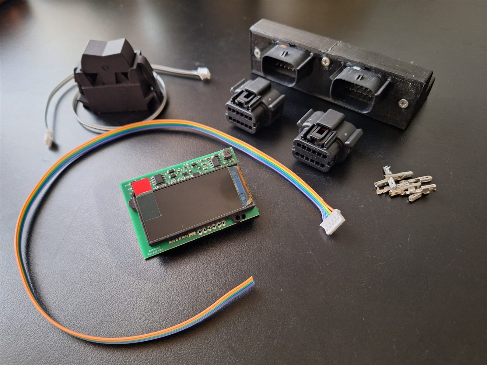

An AMOLED screen that fits the original dash, reads the engine straight from the diagnostic port, drives your tachometer, and shows everything live on your phone over Bluetooth.
Buy nowfrom 199 €
One unit, no laptop, no wiring into the engine loom. Plug into the diagnostic port and power, and it works.
Talks KWP1281 to the ECU: RPM, coolant temperature, fuel consumption, and any measuring block you pick. Screens are configured in a simple file, not in code.
A PWM output turns engine speed from the ECU into a signal for an aftermarket or original tacho, with smoothing so the needle glides instead of stepping.
Live values, settings, brightness and firmware updates from an Android app. No Wi-Fi network needed, and nothing leaves the van.
Adds analog inputs and a true ignition signal over a LIN link, measured at the battery. Flashable from the display itself.
Dims the panel when the ignition is off and restores your brightness when it comes back. Never sleeps, so the clock and Bluetooth stay up.
New firmware is pushed from the phone over Bluetooth, with rollback if an update fails to boot. Your settings survive every update.
Prices include VAT. Shipping is chosen at checkout: Latvia, EU or worldwide. Payment by card or PayPal through Stripe.
Hand-built in Latvia in small batches. Questions before ordering? Email us.
The Display + Sensor Module bundle, as shipped. Everything is hand-assembled and tested before it goes in the box.
| Display | 536 x 240 AMOLED, adjustable brightness, automatic dimming with ignition off |
| Engine interface | K-line, KWP1281 (VW/Audi ECUs with the 2-pin or OBD2 diagnostic port) |
| Outputs | Tachometer PWM output |
| Optional module | Sensor module over LIN: analog inputs, battery voltage, ignition sense |
| Connectivity | Bluetooth Low Energy to the Ratronic Android app |
| Power | 12 V vehicle supply |
| Updates | Over the air from the app, display and sensor module |
| Screens | Clock with custom background, battery, any ECU measuring block, sensor channels; configurable from the app |
It needs an ECU that speaks KWP1281 over K-line, which covers most VW and Audi engines of the 1990s and early 2000s, including common T3 engine swaps. Not sure? Email us with your engine code and we will tell you. With the sensor module the display is also useful on engines with no diagnostic port at all.
No. Everything runs over Bluetooth between the display and your phone. The app fetches updates when your phone has internet and passes them to the display.
The Android app is available today. iPhone support is in progress.
Orders ship within a few working days from Latvia. Within the EU expect 3 to 7 days, worldwide 1 to 3 weeks depending on destination. You get a tracking number by email.
Every unit is tested before shipping and carries a 2-year warranty. Firmware fixes arrive over the air; a hardware fault gets a repair or replacement.